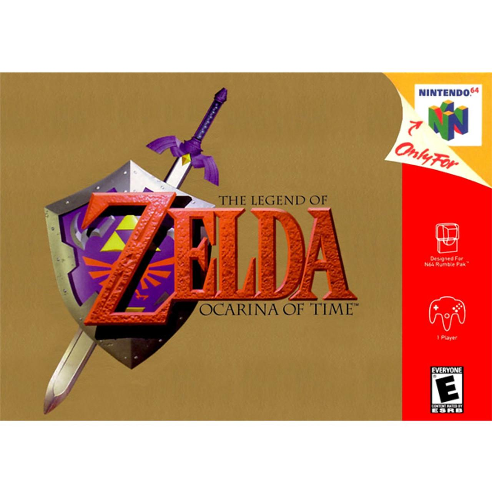
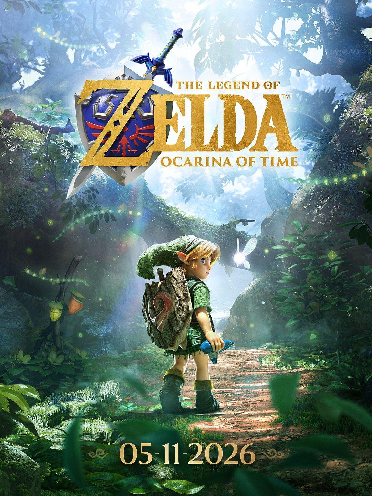
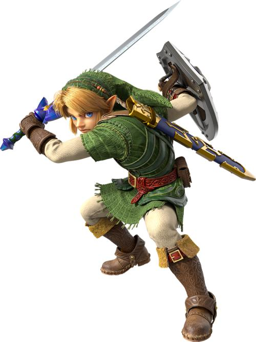
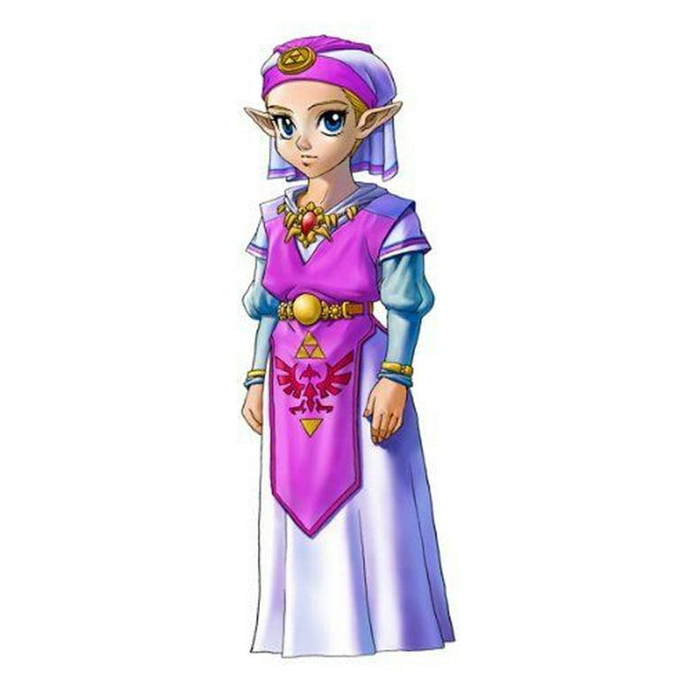
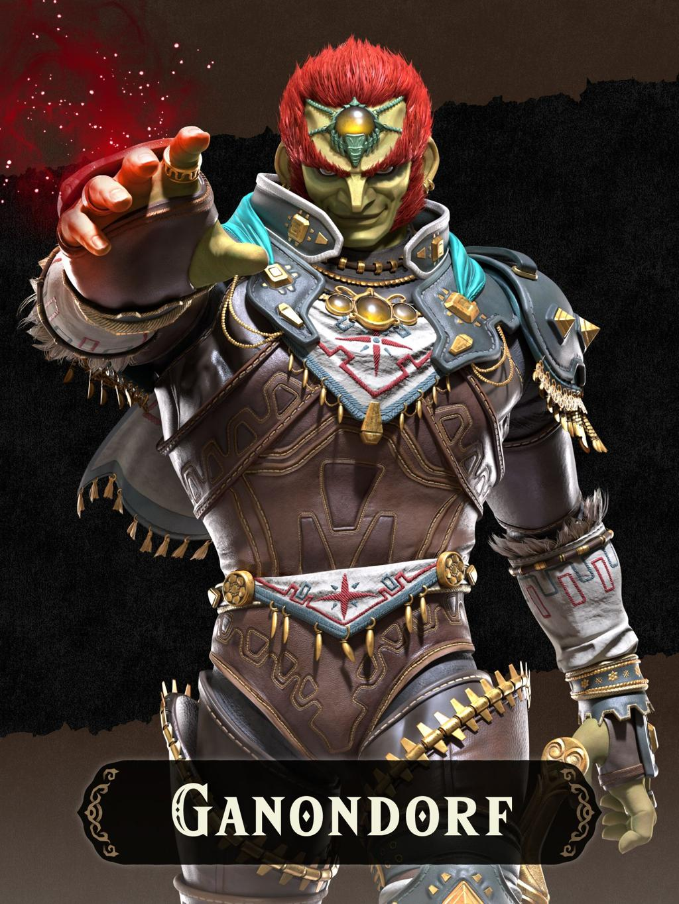
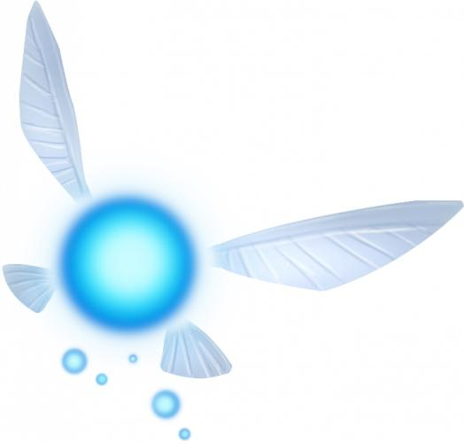

1998
O clássico original
A aventura que chegou ao Nintendo 64 e marcou uma geração de jogadores.
Explore a história de uma das aventuras mais marcantes dos videogames. Conheça Hyrule, seus personagens e os segredos que atravessam gerações.
Conhecer o jogo →
Conheça os principais dados de Ocarina of Time.
The Legend of Zelda: Ocarina of Time é uma aventura que acompanha Link em uma jornada pelo reino de Hyrule. Ao longo de sua trajetória, o jogador explora diferentes regiões, enfrenta desafios e descobre os mistérios que envolvem o destino do reino.
Conheça o lançamento original e sua nova versão.

A aventura que chegou ao Nintendo 64 e marcou uma geração de jogadores.

Uma nova apresentação de uma aventura que atravessou gerações.
Conheça a jornada de Link e os acontecimentos que envolvem o reino.
A aventura começa na Floresta Kokiri, onde Link vive entre os Kokiris. Certo dia, ele recebe a visita da fada Navi, enviada pela Grande Árvore Deku para convocá-lo. A partir desse encontro, Link descobre que seu destino está ligado à proteção do reino de Hyrule.
Durante sua jornada, Link conhece a Princesa Zelda, que revela suas preocupações sobre Ganondorf, um homem que deseja obter a Triforce, uma relíquia sagrada capaz de conceder grandes poderes. Para impedir seus planos, Link precisa reunir as três Pedras Espirituais e alcançar o Reino Sagrado.
Entretanto, Ganondorf consegue alcançar seu objetivo e mergulha Hyrule em uma era de escuridão. Link desperta sete anos depois, percebendo que o reino foi transformado. Agora, ele precisa despertar os Sete Sábios e enfrentar as consequências das ações de Ganondorf.
A viagem entre passado e futuro é um dos elementos centrais da aventura. Ao longo dessa jornada, Link enfrenta desafios, conhece novos aliados e busca restaurar a paz em Hyrule.
Conheça os principais personagens que fazem parte da aventura de Ocarina of Time.

O protagonista da aventura. Escolhido pelo destino, Link precisa proteger Hyrule e impedir os planos de Ganondorf.

Herdeira do reino de Hyrule, Zelda possui conhecimentos sobre a Triforce e busca impedir que Ganondorf domine o reino.

Principal antagonista da história. Seu objetivo é conquistar o poder da Triforce e dominar o reino de Hyrule.

A fada enviada pela Grande Árvore Deku para acompanhar Link, orientá-lo e ajudá-lo durante sua jornada.
Descubra as regiões, os vilarejos e os lugares importantes do reino.
O lar de Link no início da aventura. É uma floresta habitada pelos Kokiris e protegida pela Grande Árvore Deku.
Uma extensa região que conecta diferentes áreas do reino e permite ao jogador explorar Hyrule.
Uma pequena vila próxima à Montanha da Morte, habitada por personagens importantes para a história.
O território dos Zoras, um povo aquático que vive próximo às águas da nascente do rio.
Localizada na Montanha da Morte, é o lar dos Gorons, conhecidos por sua força e ligação com a mineração.
Uma região desértica associada às Gerudos, um povo guerreiro que possui uma cultura própria.
Descubra detalhes interessantes sobre o desenvolvimento, a música e os segredos do jogo.
Ocarina of Time foi o primeiro jogo da série principal The Legend of Zelda desenvolvido com ambientes tridimensionais, transformando a maneira de explorar Hyrule.
O sistema de mira permite que Link mantenha o foco em determinados inimigos e personagens, facilitando o combate e a movimentação durante as batalhas.
A Ocarina permite tocar diferentes melodias que ajudam Link a resolver enigmas, acessar lugares e avançar em sua jornada.
O jogador pode controlar Link em duas fases de sua vida: criança e adulto. Essa mecânica altera o mundo e permite acessar diferentes acontecimentos.
O jogo apresenta um ciclo de dia e noite que influencia a exploração, os acontecimentos e a presença de determinados personagens.
The Legend of Zelda: Ocarina of Time ocupa um lugar importante na história dos videogames. Lançado originalmente em 1998 para Nintendo 64, o título ajudou a estabelecer novas possibilidades para jogos de aventura em ambientes tridimensionais.
Entre suas contribuições mais marcantes está o sistema Z-Targeting, que facilitou o combate contra inimigos em um ambiente 3D. O jogo também apresentou uma exploração mais dinâmica, com cenários interativos, desafios e diferentes formas de utilizar os itens disponíveis.
Outro elemento que marcou sua identidade foi a utilização da música como parte da própria jogabilidade. A Ocarina permitia executar melodias que influenciavam o mundo ao redor e ajudavam Link a superar obstáculos.
Seu impacto ultrapassou o lançamento original, influenciando o desenvolvimento de outros jogos de aventura e consolidando elementos que se tornaram referências no gênero. Mesmo depois de tantos anos, Ocarina of Time continua sendo lembrado por sua narrativa, exploração e contribuição para a evolução dos videogames.
Informações sobre personagens, história, regiões e características de Ocarina of Time.
Acessar fonte oficialEntrevista com desenvolvedores sobre a criação do jogo, a transição para o 3D e o sistema Z-Targeting.
Acessar entrevistaManual de instruções original de Ocarina of Time para Nintendo 64.
Consultar manualAs artes dos personagens foram obtidas na página oficial da Nintendo. As capas devem receber os créditos de acordo com suas respectivas fontes originais.
Consultar imagens oficiais